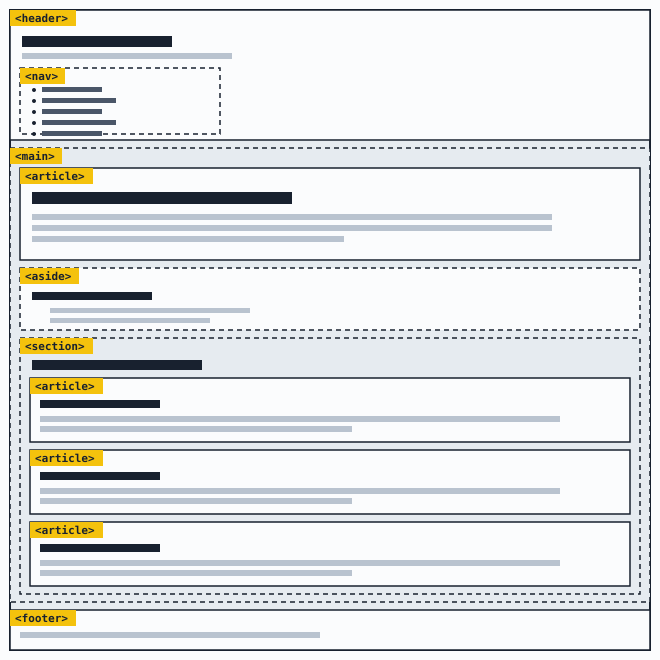
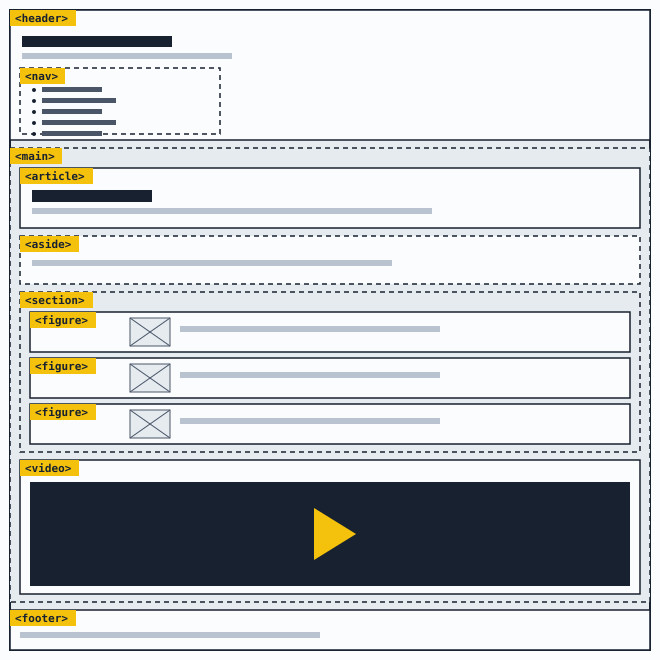
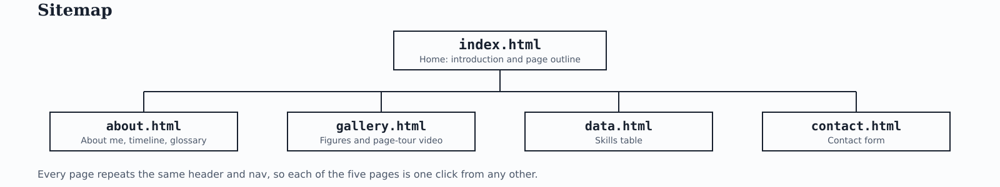

Gallery
Two wireframes and a sitemap from my design work on this project, and a short video tour of the page structure.
Each image is a figure with a caption, and each has alt text that describes what it shows.
Software engineering and web design student at MUST
Two wireframes and a sitemap from my design work on this project, and a short video tour of the page structure.
Each image is a figure with a caption, and each has alt text that describes what it shows.


